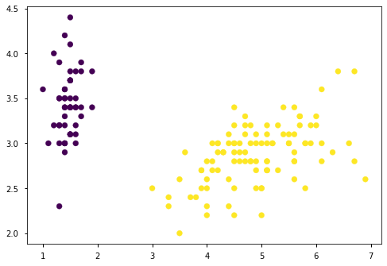
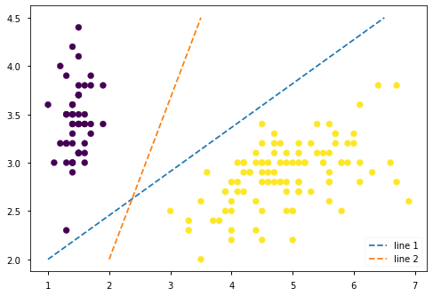
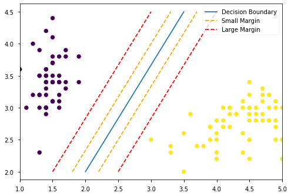

Topic 31: Support Vector Machines#
onl01-dtsc-ft-022221
05/13/21
Learning Objectives#
To revisit Linear (Algebra) Equations and revisit the relationship between \(y=mx+b\) and \(y= w^TX+B\).
To understand how support vector machine attempts to separate groups.
Discuss the advantages / disadvantages of SVMs
To gain an intuitive understanding the math notation of SVMs
Learn about using kernels with SVMs
“Activity”: Apply muiltiple types of SVCs with a small data set vs Iowa Prisoners.
Questions#
How would we decide to use a particular kernel method?
I understand the scatter plot visualization with colors by class in theory, and it seems like that could be one way to identify the shape of the best boundary. But what are we actually plotting in those scatter plots, since y is not the target class? Are those scatter plots assuming two continuous predictor variables and plotting one on x and one on y?
Resources#
BLOG POSTS/ARTICLES#
STUDY GROUP RECORDINGS:#
import matplotlib.pyplot as plt
import seaborn as sns
import pandas as pd
import numpy as np
import seaborn as sns
plt.rcParams['figure.figsize']
import sklearn.datasets as datasets
# Loading in an example dataset
plt.style.use('seaborn-notebook')
iris = datasets.load_iris()
iris_data = iris.data
# Only use two targets/classifications
iris_targets = np.where(iris.target == 0, 0, 1)
plt.rcParams['figure.figsize'] = (10,7)
Motivation#
How can we separate the data?#
import matplotlib.pyplot as plt
import seaborn as sns
import pandas as pd
import numpy as np
import seaborn as sns
plt.rcParams['figure.figsize']
import sklearn.datasets as datasets
plt.rcParams['figure.figsize'] = (10,7)
# Loading in an example dataset
plt.style.use('seaborn-notebook')
iris = datasets.load_iris()
iris_data = iris.data
# Only use two targets/classifications
iris_targets = np.where(iris.target == 0, 0, 1)
iris['feature_names']
['sepal length (cm)',
'sepal width (cm)',
'petal length (cm)',
'petal width (cm)']
# Plotting different points
def plot_iris():
fig, ax = plt.subplots()
ax.scatter(x=iris_data[:,2], y=iris_data[:,1], c=iris_targets)
return fig,ax
fig,ax= plot_iris()

Q1: Look at these lines, which is a better model?#
# Plotting lines to separate points
fig,ax=plot_iris()
l1 = np.array([[1,2],[6.5,4.5]])
ax.plot(l1[:,0], l1[:,1], linestyle='--',label='line 1')
l2 = np.array([[2,2],[3.5,4.5]])
ax.plot(l2[:,0], l2[:,1], linestyle='--',label='line 2')
ax.legend()
<matplotlib.legend.Legend at 0x7fe7476eea30>

A1:#
Line 2.
Q2: Why is it better?#
A2:#
Maximizes the distance between the data points and the line (the margin).
Accuracy isn’t everything#
Could say each line classifies the same (accuracy), so which of the following would be better?
# Small margin
margin_small = np.array([0.2,0])
l2_margin_pos_small = l2 + margin_small
l2_margin_neg_small = l2 - margin_small
## Large margin
margin_larger = np.array([0.5,0])
l2_margin_pos_big = l2 + margin_larger
l2_margin_neg_big = l2 - margin_larger
# Plotting different points
fig,ax = plot_iris()
# Plotting lines to separate points
ax.plot(l2[:,0], l2[:,1], linestyle='-', label='Decision Boundary')
# Plot with margins
ax.plot(l2_margin_pos_small[:,0], l2_margin_pos_small[:,1],
linestyle='--', color='orange', label='Small Margin')
ax.plot(l2_margin_neg_small[:,0], l2_margin_neg_small[:,1], linestyle='--', color='orange')
ax.plot(l2_margin_pos_big[:,0], l2_margin_pos_big[:,1],
linestyle='--', color='red',label='Large Margin')
ax.plot(l2_margin_neg_big[:,0], l2_margin_neg_big[:,1], linestyle='--', color='red')
ax.legend()
ax.set_xlim(1,5)
(1.0, 5.0)

Line Definitions/Legend#
Blue = Model
Possible Margins:
orange
red
Left and Right margins are called negative and positive hyperplanes
Q3: Which margin is better? Why?#
fig
A3:#
The larger margin (red).
The smaller the margin the more you’re assuming your model is correct and the more likely it will be over-fit and not generalize well.
Support Vector Machines#

Available on Amazon. Ask me how I know. 😅
Support Vector Machine - Max-Margin Classifier#
Our goal is to maximize the separation between the two hyperplanes.

Terminology#
Hyperplane:#
a \(n\)-dimensional line.
These hyperplanes are defined by two terms: \(w_T\) and \(b\).
\(w_T\) term is called the weight vector and contains the weights that are used in the classification.
\(b\) term is called the bias and functions as an offset term.
If there were no bias term, the hyperplane would always go through the origin which would not be very generalizable!
Reminder: Linear Equation Notation vs Linear Regression#
in Linear Regression, we predict \(y\) using 2 parameters, m (slope) + b(intercept/constant): $\( \large y = mx+b \)$ where:
\(x\) = input data for modeling
\(y\) = model] predictions
\(m\) = slope
\(b\) = intercept
In Linear Model Formulas, terminology/notation changes:
slopes \((m)\) becomes weights (\(w\))
constants \(b\) becomes biases (\(b\)) $\( \large y = XW^T+B \)$
\(x\) = input data for modeling
\(y\) = model] predictions
\(w\) is the weight (slope)
\(b\) is the bias (constant)
Decision boundary:#
The hyperplane that divides/separates the classes

Margin#
The distance between the decision boundary and the closes datapoints
Support Vector:#
“Support vectors are the data points nearest to the hyperplane, the points of a data set that, if removed, would alter the position of the dividing hyperplane. Because of this, they can be considered the critical elements of a data set.” - KDnuggets - SVM simple explanation

Positive/Negative Hyperplanes#
Note: For SVMs, we do not represent our classes as 0 and 1, instead we use -1 and +1
Positive Hyperplane:
The line defined by the support vectors to the right (+) of the decision boundary $\( b + w_Tx_{pos} =1\)$
Negative Hyperplane:
The line defined support vector to the left (-) of the decision boundary $\( b + w_Tx_{neg} =-1\)$
Max Margin Optimization/Calculation#
To maximize the margins between hyperplanes, first subtract the negative hyperplane’s equation from the positive hyperplane’s equation:
Normalize \(w_T\) by dividing both sides of the equation by its norm, \(||w||\)
Note: \( || w ||= \sqrt{\sum^m_{j-1}w_j^2} \)
The equation becomes: $\( \large \dfrac{w_T(x_{pos}-x_{neg})}{\lVert w \rVert} = \dfrac{2}{\lVert w \rVert}\)$
The left side of the equation = the distance between the positive and negative hyperplanes. (This is the margin)
The objective of the SVM is then maximizing \(\dfrac{2}{\lVert w \rVert}\) under the constraint/requirement that the samples are classified correctly.
But what if my data isn’t easily separable?#
When does maximizing the margin cause problems?

So Where do we go from here?/ What can we do about this?
Two Types of SVM Max-Margin Classifier#
Two kinds of max-margin classifiers:
hard margin = no errors whatsoever
soft margin = allows for errors
The Soft-Margin Classifier#
The linear constraints need to be relaxed for data that are not linearly separable.
We do this by adding slack variables \(\xi\) to our margins.
By adding some slack ( allowance for misclassification), we improve model generalizability while sacrificing accuracy
Soft Margine Constraints:
\( b + w_Tx^{(i)} \geq 1-\xi^{(i)}\) if \(y ^{(i)} = 1\)
\( b + w_Tx^{(i)} \leq -1+\xi^{(i)}\) if \(y ^{(i)} = -1\)
For \(i= 1,\ldots ,N\)
The objective function (AKA the function you want to minimize) is
The hyperparameter \(C\) is used to define how much slack is allowed.
The Hyperparameter \(C\)#
Q: What happens if \(C\) is very large? (What errors do we care about more?)
C determines the amount of allowed misclassified data point.
When C is large, misclassifications are heavily punished, so we get left figure.
When C is small, misclassifications are accepted to maximize overall margin, and we get right figure.
Important note: scikit-learn’s
cis really the inverse of C (1/C):So using a higher value of
cis a smaller regularization or smaller penalty, allowing more misclassified data points.whereas a lower value of
cis a higher penalty and allowed fewer misclassified datapoints.
The Kernel Trick#
Kernel Function Resources#
Blog Posts/Articles
Scikit-Learn Documentation:
Q: But what do we do when don’t have linearly separable data??#

A: When a simple model isn’t good enough, extend to higher dimensions.#
Use a kernel function to transform the data into a higher dimension and then separate the data in the higher dimension.

scikit-learn kernels + hyperparameters for SVC#
Summarizing the available functions and their hyperparameters.
Recall that in general,
Cis the parameter for balancing standard accuracy metrics for tuning classifiers versus the decision boundary distance.
1. Radial Basis Functions (RBF) Kernel#
-
C\(\gamma\), which can be specified using
gammain scikit-learn (default=’auto’)Large gamma = overfitting
Small gamma = underfitting
2. Polynomial Kernel#
Hyperparameters:
\(\gamma\), which can be specified using
gammain scikit-learn\(r\), which can be specified using
coef0in scikit-learn\(d\), which can be specified using
degreein scikit-learn
3. Sigmoid Kernel#
Hyperparameters:
\(\gamma\), which can be specified using
gammain scikit-learn\(r\), which can be specified using
coef0in scikit-learn
Other Types of SVC Models in sklearn#
NuSVC#
Like SVC, NuSVC but adds a parameter \(v\) (see hyperparameters below).
NuSVC implements “one-against-one” approach when number of classes >2
when there are n classes, \(\dfrac{n*(n-1)}{2}\) classifiers are created, and each one classifies samples in 2 classes.
Hyperparameters:
\(v\): controls the number of support vectors and training errors
creates upper bound on training errors
creates lower bound on support vectors
LinearSVC#
Like SVC but LinearSVC implements “one-vs-rest” so when there are \(n\) classes, just \(n\) classifiers are created and each one classifies samples in 2 classes (class of interest and all others)
LinearSVC generates more classifiers, so LinearSVC tends to scale better.
But there’s sooo many options. How do I pick a kernel?!?#
To keep it simple: - If your data looks linearly separable, use linear SVC, otherwise use RBF - But I am sure you can find some technical papers discussing the tradeoffs of all of the options. - (I wasn’t able to find a good high-level comparison or use-case type of article.)
📙ACTIVITY: Classification with Support Vector Machines#
Jump over to the
Support-Vector-Machines-Iowa_prisoners.ipynbnotebook in the same folder as this notebook.
Run the
MODELsection 2-3 times, changing the dataset used each time.Modify the
PRISONERSandRESAMPLED_PRISONERSto control the dataset used:PRISONERS= False,RESAMPLED_PRISONERS= FalseSmall dataset ~50/50 split.
PRISONERS= True,RESAMPLED_PRISONERS= FalseLarge imbalanced dataset.
PRISONERS= True,RESAMPLED_PRISONERS= TrueLarge balanced dataset.
APPENDIX#
Note re: predictions/probability#
You can make predictions using support vector machines. The SVC decision function gives a probability score per class. However, this is not done by default. You’ll need to set the
probabilityargument equal toTrue. Scikit-learn internally performs cross-validation to compute the probabilities, so you can expect that settingprobabilitytoTruemakes the calculations longer. For large datasets, computation can take considerable time to execute.
In other words:
If you want to get the probabiltiies (
.predict_proba) for ROC AUC, you would have to instantiate your SVC with the parameterSVC(probability=True)https://www.kaggle.com/c/home-credit-default-risk/discussion/63499